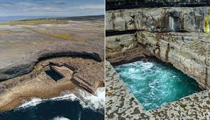
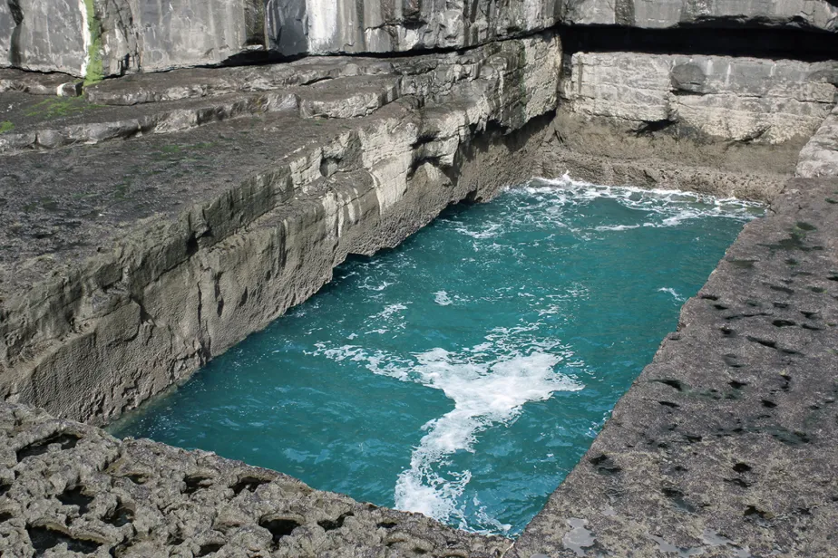

WORMHOLE OF INISHMORE

Introduction
Inishmore is the largest of the Aran Islands of Galway Bay in Ireland and is an area consisting of 12 square miles. It is the largest island off the Irish coast with no bridge or causeway to the mainland
One of the most remarkable features of Inishmore island is what is known as the “Wormhole” or Poll na bPéist, which means “Serpent’s Lair,” relating to the reptilian sea monster from Gaelic folklore. The Wormhole is a rectangular shaped pool cut straight from the limestone floor, and can only be accessed by walking along the cliffs south of the ancient site Dún Aonghasa. The sea water ebbs and flows at the bottom of the cliffs and into the pool where the Wormhole begins to fill up, overflows, and then starts to drain. The process starts over and over again, and is said to be mesmerizing. Upon close observation, the Wormhole appears to reveal cut-like marks, especially on its seaward side, indicating that it may not be of natural origin.
Literary
Proponents like Derek Olson (Megalithic Marvels) and Roger Spurr (Mudfossil University) see it as evidence of "ancient technology" or a "gateway to other worlds," linked to Celtic civilization or Tartaria (a hidden civilization before the 19th century). They claim that the edges are "etched with energy tools" (such as lasers or ethereal devices), and that the subterranean connections to the ocean were a "drainage system" or "energy conduit."
Some say it is an "energy gateway" between worlds, a "hidden entrance" used by ancient peoples for travel or spiritual rituals. Its geometric "opening" is not accidental but the result of ancient human design.
The Wormhole of Inis Mór holds great cultural significance for the local community. Many believe that it has spiritual properties and that it is a symbol of the island’s connection to the spirit world. The local economy benefits greatly from the tourism industry, with visitors coming from all over the world to see this natural wonder.
However, there are also beliefs and superstitions surrounding the Wormhole. Some believe that it is cursed and that anyone who attempts to cross it will suffer misfortune. Others believe that the Wormhole is a portal to the underworld, and that it should be left alone for fear of inviting evil spirits onto the island.
Celtic folklore speaks of the Péist (a sea monster) as a "dimensional being," and the hole as a gateway to the Aos Sí (Celtic spirits, which some interpret as ETs in Jacques Vallée's book "Passport to Magonia").

Some say it is linked to Mudflood/Tartaria and is part of a network of "star fortresses" in Ireland, where it was used for "time travel" or "sacrificing rituals" to giants.
This isn't natural erosion, but a perfectly rectangular hole in granite—ancient giants created it as a tidal basin via an underground tunnel. They had power tools.
They say that rising sea levels after the Ice Age or the Flood submerged entire continents, and the seas are now "graveyards" for advanced cities with crystal energy technology. Coastal anomalies (like Yonaguni in Japan or the city beneath the Caribbean) are "erosion remains," not natural formations. Scientists are hiding them from us.
Some people even say that the Red Bull team that filmed the famous dive video in 2017 saw "long white creatures" inside the hole and were asked to delete the footage (of course without evidence, but the original video did indeed disappear from YouTube!).
Research
The key things to watch out for when visiting here is No phone Signal It’s not advised to swim as it can be very dangerous. its a long unsteady walk from the main road.